The pictures
Two photos are related by a homography when the camera only rotates about its center of projection, or when the scene is a single plane. I used three sets of overlapping photos of the first kind.
The project allows images from other sources, so all three sets come from public stitching test data (credits below). Each was shot by turning the camera from one spot:
- St. Petersburg: a pan across the Neva toward the Peter and Paul Fortress. The originals are 3888×2592, which is too large for per-pixel NumPy warps, so I load them at 1/4 scale (972×648). Frames 1 and 2 overlap by about 70%.
- Weir: a pan across a small weir and sluice gate beside a stone wall, 1333×750. Frames 1 and 2 overlap by about 60%, and the wall and balcony visibly change angle between them.
- Cathedral: a cathedral nave with the camera tilted up toward the vault, 600×768. The frames overlap by about 73% and are exposed very differently, one cool and one warm.
Every image is loaded as a float array of shape (H, W, 3) in [0, 1]. Coordinates are (x, y) = (column, row), with (0, 0) at the center of the top-left pixel.
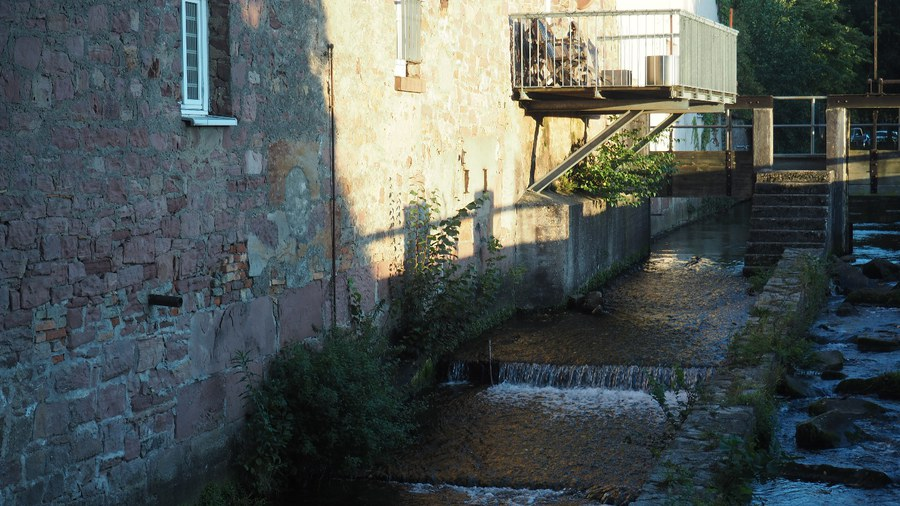
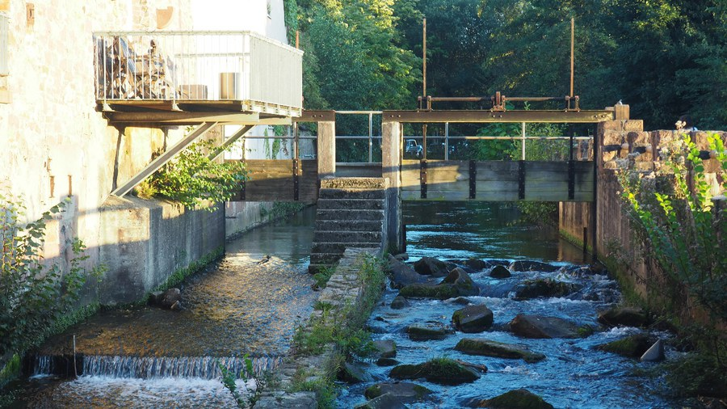
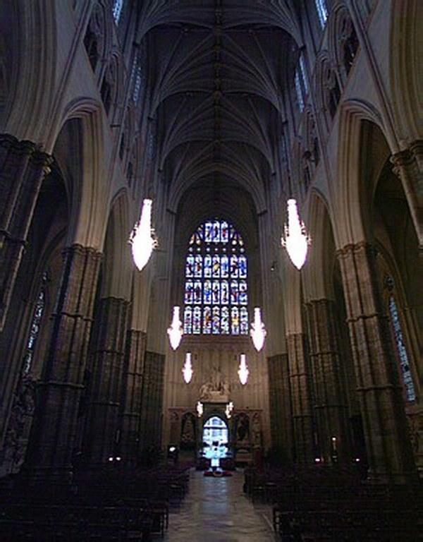
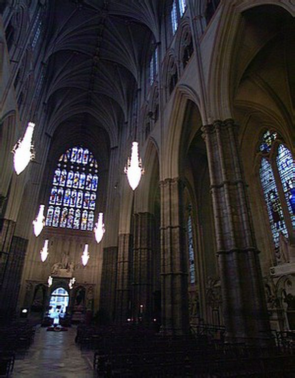
A pair that wasn't
My original second set was two views of the Pont du Gard aqueduct. When I checked it, sliding one image 429 px sideways matched the other to within about 2% of the intensity range. The two "photos" were crops of a single photo: the transform between them is a pure translation, not a projective one, so I replaced the set. None of the sets above has that problem: no shift lines up their frames.
Recovering homographies
A homography maps a point (x, y) in one image to (x′, y′) in the other through a 3×3 matrix with 8 unknowns.
In homogeneous coordinates, with the bottom-right entry fixed to 1:
Dividing out w = gx + hy + 1 and multiplying through by it makes each correspondence give two equations that are linear in the unknowns:
[0 0 0 x y 1 −x·y′ −y·y′] · h = y′, h = [a, b, c, d, e, f, g, h]T
ComputeH(im1_pts, im2_pts) stacks these rows for n points into a 2n×8 matrix A, with the x′ equations in the even rows and the y′ equations in the odd rows, and b = [x′0, y′0, x′1, y′1, …]. Four points determine H exactly, but clicks are noisy, so I use more and solve the overdetermined system A h = b by least squares (np.linalg.lstsq). On points sent through a made-up H, the function recovers every entry to within 10−9.
Correspondences were clicked with the course's labeling tool on the original images and saved as JSON. Two details matter when loading them:
- The points are in original-resolution pixels, so they are rescaled to the loaded images about pixel edges: x′ = (x + 0.5)·s − 0.5.
- The tool draws image 2 stretched to image 1's size. For two images of different sizes, image 2's points come back scaled by w1/w2 and must be mapped back. I found this when one pair's second-image points landed about 11% off.
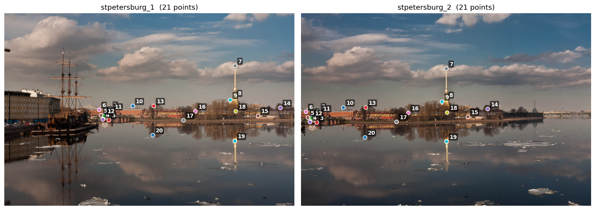
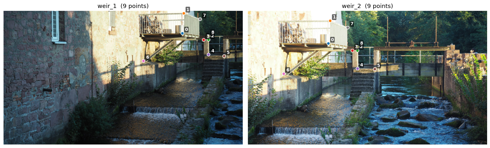
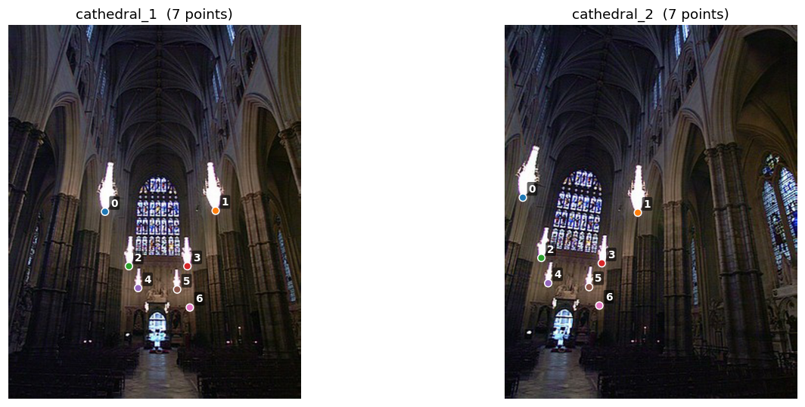
The recovered homographies each map image 1 into image 2's frame. Reprojection error is the distance between a point sent through H and its clicked partner:
| Pair | Points | H | Mean error | Max error |
|---|---|---|---|---|
| St. Petersburg 1→2 | 21 | [[1.236, −0.00114, −375.6], [0.0793, 1.145, −41.55], [2.531e−4, −2.003e−5, 1]] | 0.27 px | 0.82 px |
| Weir 1→2 | 9 | [[1.090, −0.0609, −639.4], [0.0143, 1.085, 26.66], [−5.285e−6, −1.029e−4, 1]] | 2.19 px | 5.35 px |
| Cathedral 1→2 | 7 | [[1.245, −0.1783, −138.3], [0.3506, 1.113, −116.7], [5.112e−4, −8.064e−5, 1]] | 1.09 px | 2.22 px |
Why the points have to spread out
My first St. Petersburg set had 7 accurate clicks, each within about 1 px of the final H. They all sat inside a 40-pixel patch, though. H fit that patch to 0.37 px and was wildly wrong everywhere else: one corner of the image landed about 2,700 px from where it belonged, and the mosaic turned into a stretched wedge with the spire tilted and doubled.
I kept those 7 points and added 14 landmarks spread across the overlap: the spire tip and belfry, chimneys, building corners, tree tops, and the spire's and trees' reflections. For each landmark I picked a spot by eye in image 1, then located its match in image 2 by normalized cross-correlation of a small patch. I avoided ice floes, ducks and clouds, which moved between the two shots. Even when each point is left out of the fit, H still predicts it to within about 1 px.
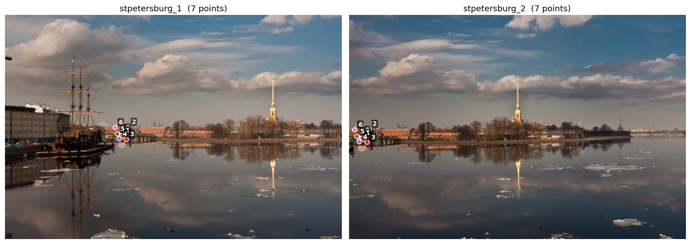
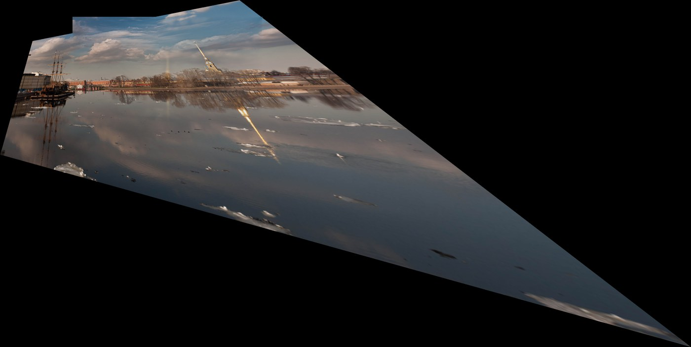
The cathedral set has the same problem in a milder form. Its 7 points cover only the lower-middle of the frame, and checked against landmarks I did not fit to, H is 1–3 px off there but 4–7 px off near the vault.
Warping and rectification
Both warp functions use inverse warping: every output pixel asks where it came from in the input, so the output has no holes.
warpNearestNeighbor(im, H) and warpImageBilinear(im, H) share the same steps:
- Canvas. Send the image's four corners through H. Their bounding box (xmin, ymin)–(xmax, ymax) is the output size, and it can start at negative coordinates.
- Inverse map. List the center of every output pixel in the output frame, multiply by H−1, and divide by w. That gives each one's source position (x, y) in the input, usually between pixels.
- Sample the input at (x, y). This is the only step that differs between the two methods.
- Return an RGBA image whose alpha is 0 wherever the source position falls outside the input, plus the offset (xmin, ymin) that places the result in the output frame. Mosaicing uses both.
Nearest neighbor rounds (x, y) to the closest pixel center and copies it. Bilinear takes the four surrounding pixels and blends them by distance, with a = x − ⌊x⌋ and b = y − ⌊y⌋:
On the last row and column the top-left neighbor is clamped one pixel in, so a point exactly on the image edge still has four neighbors. To check the code, I confirmed that the identity and integer shifts reproduce the input exactly and that bilinear sampling reproduces a linear brightness ramp to 10−15. Nearest neighbor also matched OpenCV's warpPerspective pixel for pixel; I used OpenCV only for this test, never in the project code.
Making a flat object face the camera
If four points in a photo are the corners of a real rectangle, the homography that sends them to an axis-aligned rectangle undoes the perspective of the whole plane they lie on. I rectified two photos this way, with corners in top-left, top-right, bottom-right, bottom-left order:
- Chessboard → 800×800 square. The corners are the inner edge of the 8×8 playing area, located on zoomed-in views.
- Gallery wall → 680×400. The target is a 4×2 block of portraits in a long gallery. I found the corners by fitting straight lines to the gold rails and frame strips and intersecting them. As a sanity check, the two rails meet at (679, 436), the corridor's vanishing point. I gave each portrait a width-to-height ratio of 0.85, the proportion at which the faces look natural, so the block is 4×0.85 : 2 = 1.7.
Before warping, the gallery photo is cropped to its left part (yellow box). The wall's vanishing line runs vertically through x ≈ 679, and points on it map to infinity, so warping the whole photo would ask for an infinite canvas.
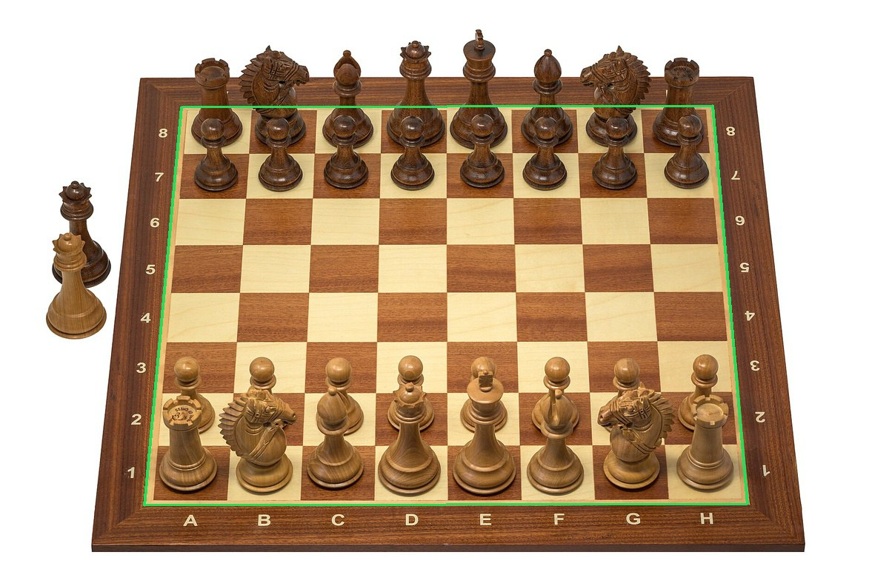
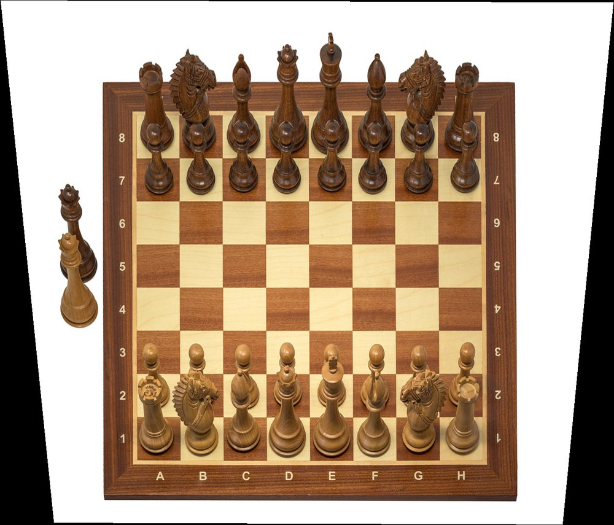
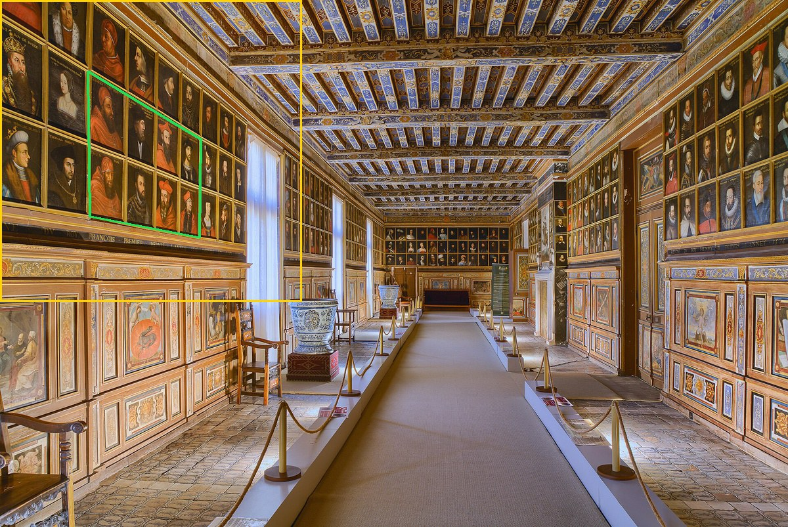
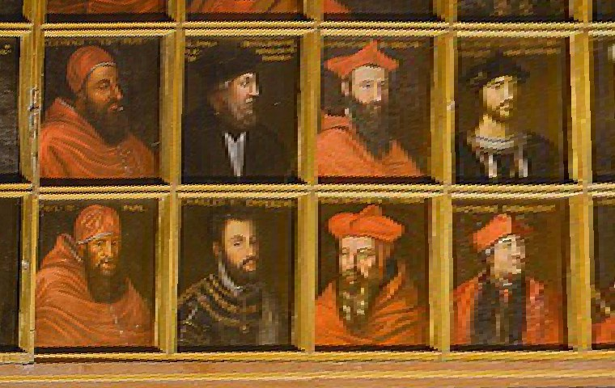
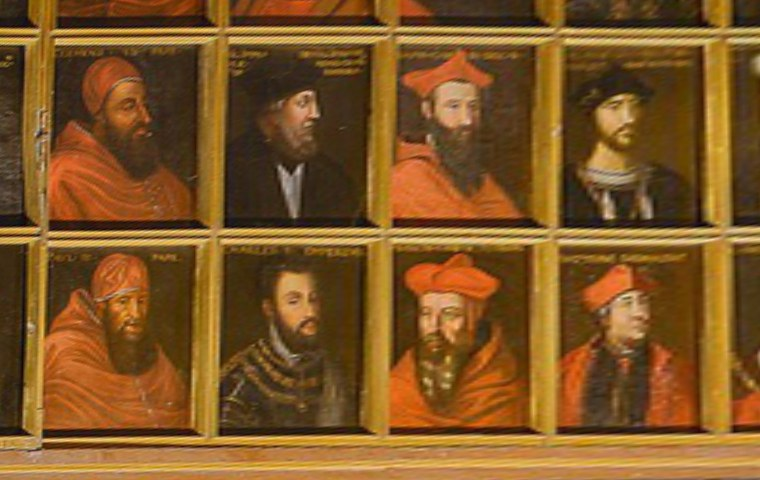
Nearest neighbor vs. bilinear
The difference shows wherever the warp magnifies the source. The far end of the portrait block is about 30 px wide in the photo and 170 px in the output, more than 5× larger:
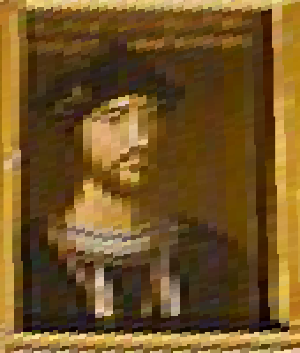
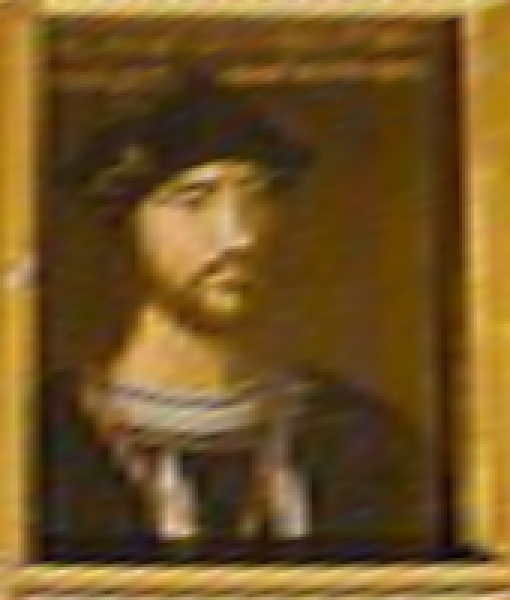
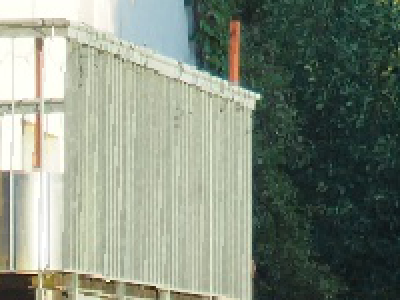
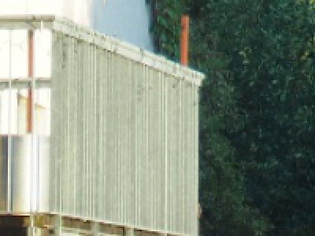
| Warp | Output size | Nearest neighbor | Bilinear | Ratio |
|---|---|---|---|---|
| weir_1 → weir_2 frame | 1582×912 | 0.13 s | 0.28 s | 2.2× |
| Chessboard | 1391×1190 | 0.14 s | 0.33 s | 2.4× |
| Gallery crop | 2602×1927 | 0.43 s | 0.65 s | 1.5× |
Speed vs. quality
Nearest neighbor does one lookup per pixel; bilinear does four plus the blending arithmetic. That makes it 1.5–2.4× slower here (median of 3 runs, Python 3.8 and NumPy on my laptop). The gap is smaller on the gallery, where about a third of the canvas is empty: those pixels still go through the shared inverse mapping but skip sampling.
In exchange, bilinear removes blockiness under magnification and jagged edges on thin diagonal lines. Its only cost in quality is a slight softening, since averaging four pixels is a mild blur. For mosaics, where seams and edges need to line up, I use bilinear.
Blending the mosaics
Each mosaic keeps image 2 unwarped, warps image 1 into its frame, and blends the two where they overlap.
mossaic(im1, im2, H) works in four steps:
- Warp. Run
warpImageBilinear(im1, H), which returns the warped image and its offset (xmin, ymin) in image 2's frame. - Canvas. The canvas's top-left corner is (min(xmin, 0), min(ymin, 0)), so it covers both images even when the warped one sticks out to the left or top. For the weir it begins 743 px left of image 2. Each image goes on its own canvas-sized layer with an alpha mask.
- Feather weights. Each layer's weight is its distance to the nearest empty pixel, computed with
distance_transform_edt, the SciPy equivalent of MATLAB'sbwdist. The mask is padded with one ring of zeros first, so an image edge on the canvas border still counts as an edge. Weights are 0 outside the image and rise linearly toward its middle. - Blend. Plain feathering takes (w1·I1 + w2·I2) / (w1 + w2), so the mix slides from one image to the other across the overlap instead of switching at a hard seam.
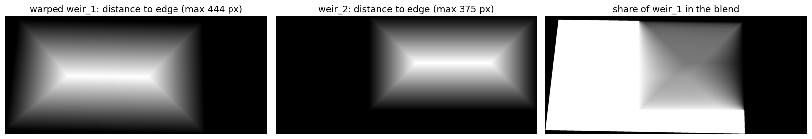
Plain feathering also averages fine detail. Where the images are misaligned by a few pixels, each edge appears twice at half strength, which is ghosting. So I blend in two frequency bands, a 2-level Laplacian pyramid:
result = (w1·low1 + w2·low2) / (w1 + w2) + (high1 if w1 ≥ w2 else high2)
Brightness and color (the low band) still fade smoothly across the overlap. Detail (the high band) comes from one image only, so every edge appears once. Dividing by the blurred alpha averages only over pixels that have data, which keeps the empty canvas from darkening each image's edges. Where only one image has data, the two bands add back to exactly that image.
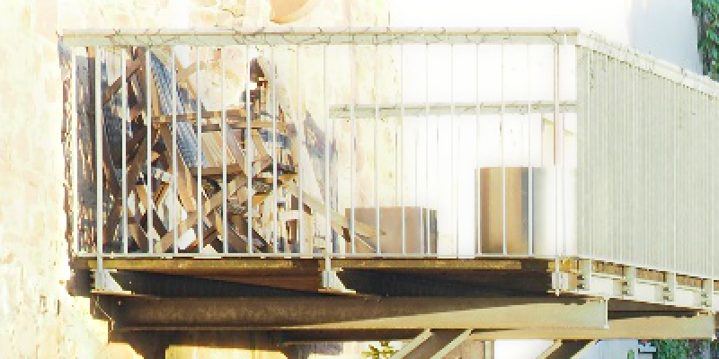
St. Petersburg
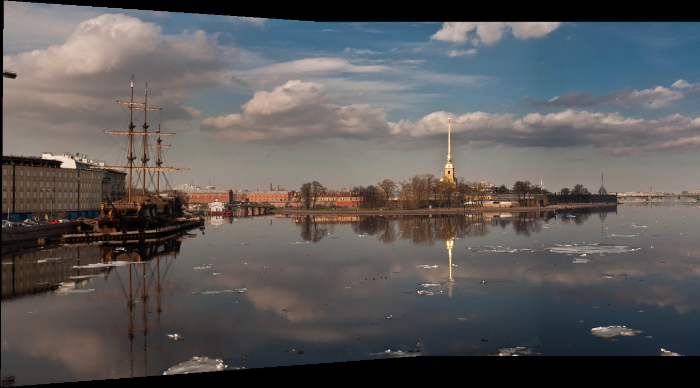
Weir
Cathedral
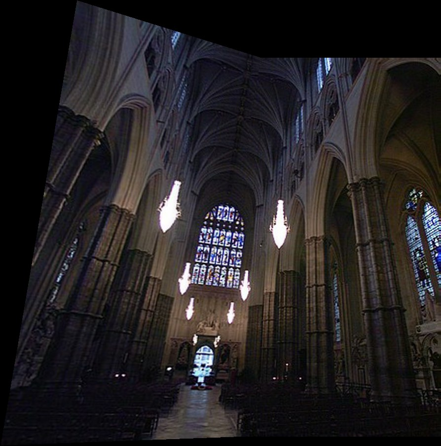
Harris corners and ANMS
Find points that can be located precisely, then keep a set of them that is both strong and spread over the whole frame.
The Harris detector (the course's sample code) builds the second-moment matrix M of the image gradients in a Gaussian window (σ = 1) around each pixel. Its corner strength is the harmonic mean of M's eigenvalues, the measure the paper uses:
f is large only where the gradients are strong in two directions, which is a corner. On edges and flat areas it is near zero. Every 3×3 local maximum of f at least 20 px from the border is a candidate. The border margin is there so that B.2's 40×40 window fits inside the image.
On weir_2 that gives 23,349 candidates, one every 6.5 px. Most of the scene is texture (stone, leaves, rippling water), and Harris responds to all of it. Keeping only the 500 strongest does not fix this, because strong corners cluster. One ninth of the frame, the sunlit wall and the balcony bracket, holds 211 of those 500 (42%). The whole bottom third holds 20.
Adaptive Non-Maximal Suppression fixes the spread. Each corner gets a suppression radius: the distance to the nearest corner that is clearly stronger than it.
The 500 corners with the largest radii are kept. The strongest corner has r = ∞. A weaker corner survives if nothing much stronger is nearby, so quiet areas keep their best points too. I compute all radii at once with the pairwise-distance helper dist2 and a mask for the strength condition. To keep that n×n matrix small, ANMS runs on the 2000 strongest candidates, which takes 0.03 s. The 500 survivors are at least 17 px apart, and each ninth of the frame now holds between 35 and 76 of them.
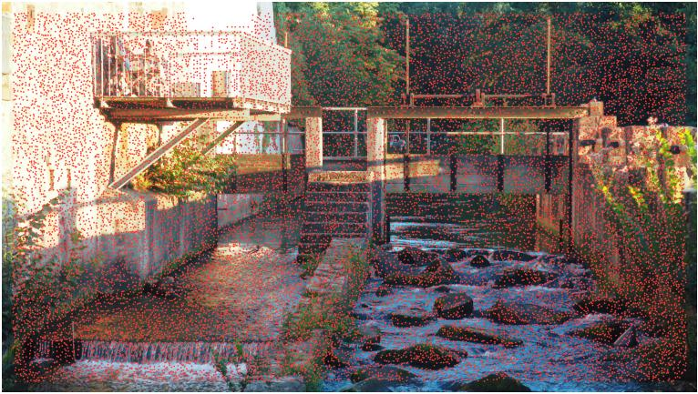
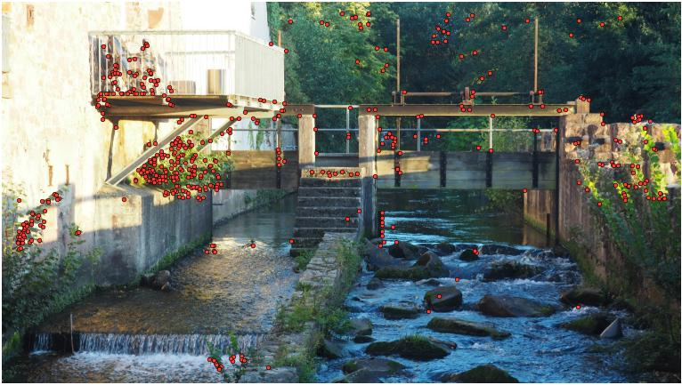
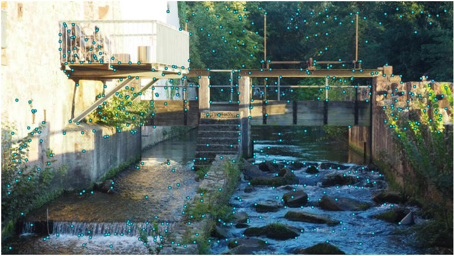
Feature descriptors
Describe the neighborhood of each corner so the same point can be recognized in the other photo.
For each corner I take the 40×40 grayscale window around it and shrink it to 8×8 by averaging each 5×5 block. The averaging blurs and subsamples in one step. That makes the descriptor insensitive to the one or two pixels of error in a corner's position, and it prevents aliasing. Then I apply bias/gain normalization, subtracting the mean and dividing by the standard deviation, so the descriptor ignores brightness and contrast. This matters here, because the weir and cathedral pairs are exposed differently. Each feature becomes a 64-dimensional vector with mean 0 and standard deviation 1.
As the project allows, the windows are axis-aligned (no rotation invariance) and there is no wavelet step. All windows are cut in one indexing operation: an offset grid of −20…19 broadcast against every corner's (row, column) gives an (n, 40, 40) array.
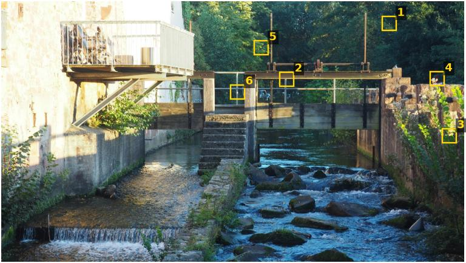
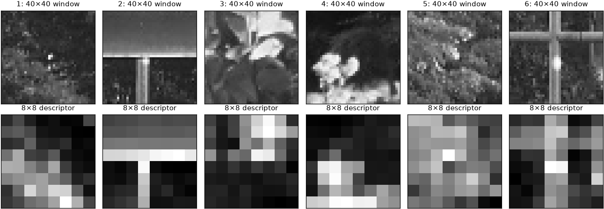
Feature matching
Pair each feature in image 1 with its most similar feature in image 2, and keep only the pairs that are unambiguous.
For each image-1 descriptor I compute its squared distance (SSD) to every image-2 descriptor, and look at the nearest (e1-NN) and second-nearest (e2-NN). How close the nearest one is says little on its own. Repetitive scenes (railings, ribbed vaults) produce close matches that are wrong. What separates good matches is Lowe's ratio test: a correct match should be much closer than any alternative.
To choose the threshold I reproduced the paper's Figure 6b on my own data. I took every image-1 feature in the three pairs (1500 in all) and its nearest neighbor. Each pair counts as correct if the final RANSAC homography from B.4 maps one point to within 3 px of the other. As in the paper, incorrect matches pile up near a ratio of 1, while correct ones spread over low ratios. A threshold of 0.5 keeps 73% of the correct matches and only 4.5% of the incorrect ones, so 86% of the surviving matches are correct. Pushing it higher brings in incorrect matches much faster than correct ones.
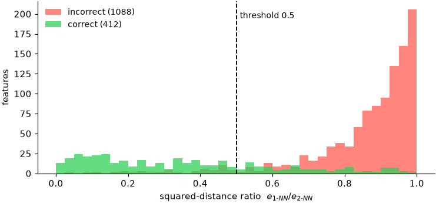
The matches that pass the ratio test are shown below, colored by what RANSAC decides in B.4: green if consistent with the homography, red if rejected. Most of the red lines are clearly wrong. In the cathedral, most of them connect different ribs of the repeating ceiling vault.
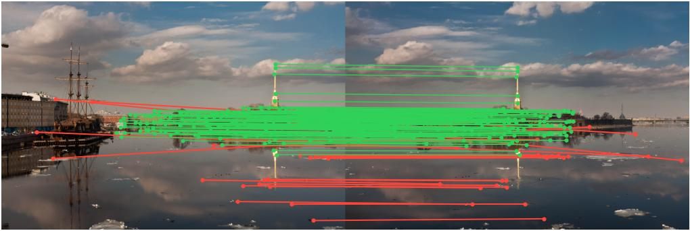
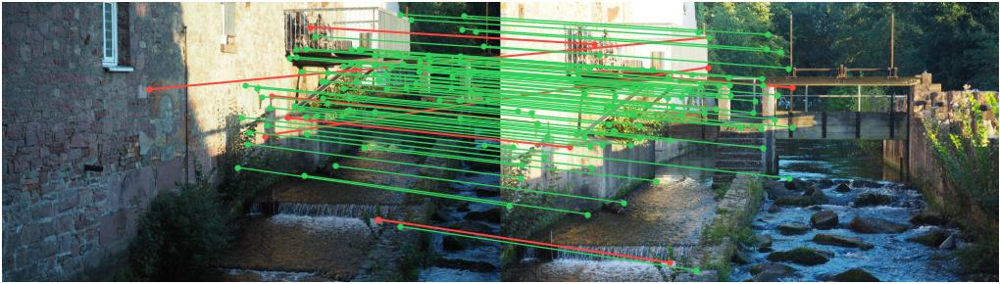
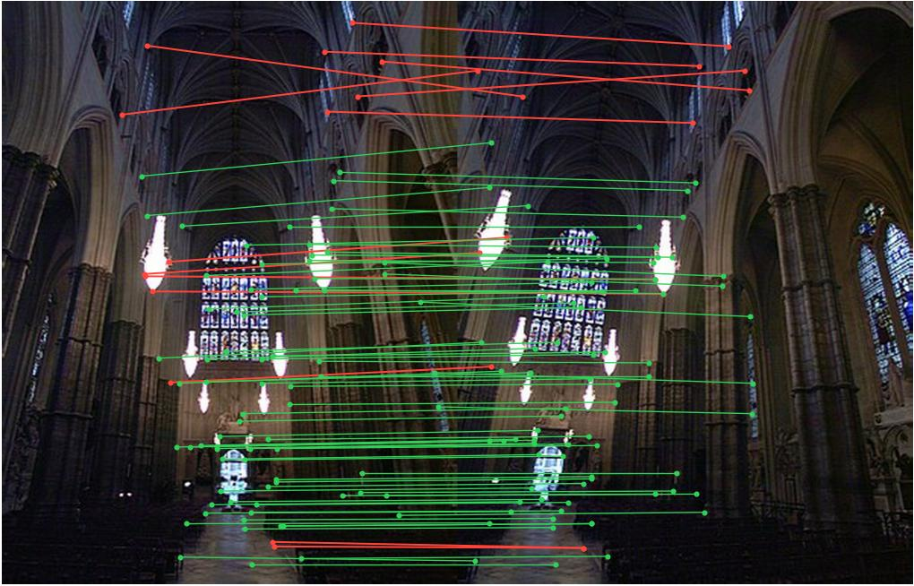
RANSAC and automatic mosaics
Least squares on all matches would let the remaining outliers drag H around. RANSAC finds the homography most matches agree on.
My 4-point RANSAC, written from scratch:
- Pick 4 distinct matches at random and solve for H exactly with Part A's
ComputeH. - Map every image-1 point through H, divide by w, and count as inliers the matches that land within ε = 3 px of their partner.
- Repeat 500 times and keep the largest inlier set.
- Refit H by least squares on all those inliers. The 4-point H is only as accurate as its 4 points, so the refit averages out their error.
Corners are located only to the nearest pixel, so even correct matches are off by about a pixel, and a 4-point fit adds error on top. With ε = 1 px only 38 of the 82 weir matches count as inliers. At 2 px it's 63, at 3 px 74, and at 5 px 79. The count levels off at 3 px, which keeps the good matches and still rejects the obvious outliers. A fixed random seed makes results repeatable.
The resulting H maps image 1 into image 2's frame, the same direction as in Part A, so mossaic takes it unchanged. Every number below comes from running the whole pipeline (Harris, ANMS, descriptors, matching, RANSAC), which takes 0.15–0.2 s per pair.
| Pair | Matches | Inliers | Inlier residual | Auto H on my clicks (mean / max) | Overlap error manual → auto |
|---|---|---|---|---|---|
| St. Petersburg 1→2 | 179 | 154 | 0.68 px | 0.31 / 1.01 px | 17.0 → 17.0 |
| Weir 1→2 | 82 | 74 | 1.16 px | 2.71 / 7.11 px | 41.0 → 37.2 |
| Cathedral 1→2 | 88 | 74 | 1.08 px | 1.69 / 3.39 px | 12.9 → 10.3 |
Auto H on my clicks applies the automatic homography to the Part A hand-clicked points, which it never saw, and measures how far each lands from its partner. Overlap error is the mean absolute grayscale difference (0–255) between warped image 1 and image 2 where they overlap. It includes the exposure difference between the shots, so compare the two numbers in a row, not across rows.
The automatic homographies agree with my clicks about as well as clicks agree with themselves. For St. Petersburg, where I clicked 21 well-spread points, the two are equivalent. For the weir and the cathedral, the automatic H aligns the overlap slightly better than the manual one. My 9 weir clicks were all in the top third of the frame and my 7 cathedral clicks in its lower middle, while the RANSAC inliers cover the whole overlap. This is the same lesson as Part A: spread matters more than count.
St. Petersburg
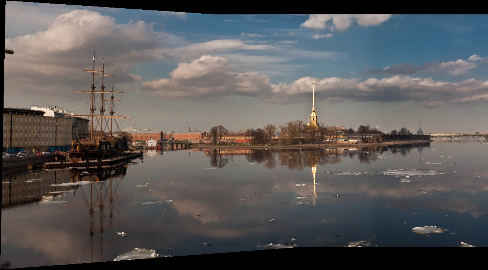
Weir
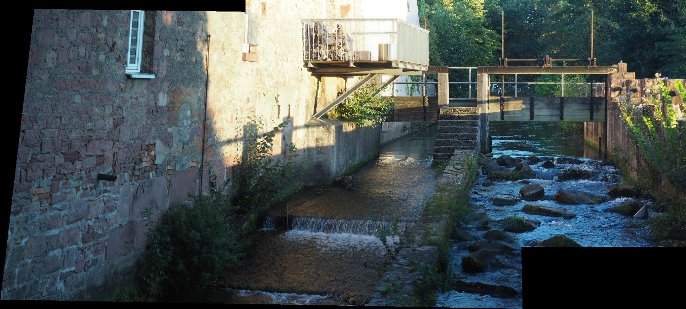
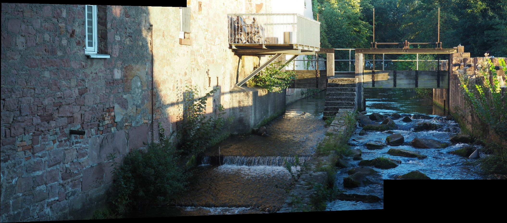
Cathedral
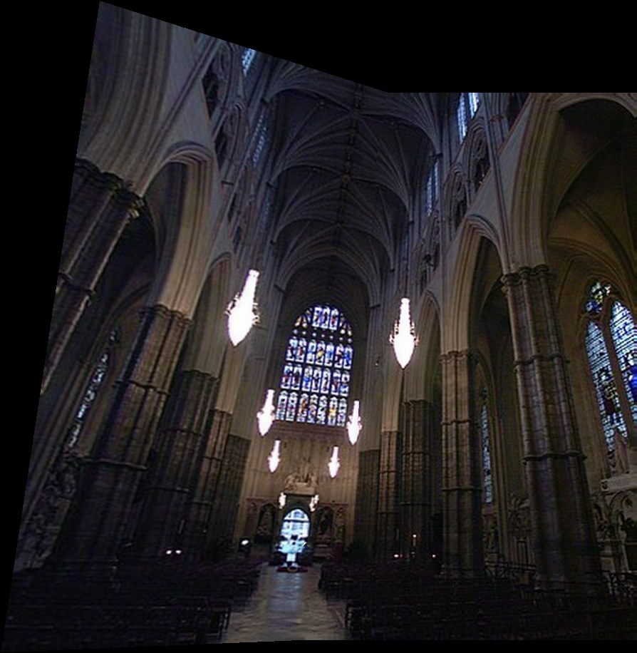
What I took away
The most useful lesson was that a small reprojection error does not mean a good homography. Seven accurate points in one corner fit to a third of a pixel and still produced a wedge. What H needs is points that pin down the plane everywhere the image goes, which means spreading them across the whole overlap and checking each one against a fit that leaves it out.
The rest came down to coordinate bookkeeping: (x, y) vs. (row, column), pixel centers vs. pixel edges, rescaled clicks, which way H points, and a canvas whose origin is negative. Every one of those mistakes runs without an error and quietly produces a shifted or stretched picture. Splitting the blend into frequency bands was the step that turned visible seams and ghosts into mosaics that read as single photos.
In Part B the striking thing was how weak each individual step is, and how well they work together. Harris fires on 23,000 points, most of them texture. Nearest-neighbor matching on its own is wrong more often than right: 1088 of the 1500 nearest neighbors are incorrect. The ratio test throws out most of the wrong ones, and RANSAC removes the rest, because outliers almost never agree on a single homography. The result matches my hand-clicked homographies to within a few pixels, and in 0.2 s instead of the time it took me to click.
Sources
- St. Petersburg (boat1–2) and cathedral (a2–a3): OpenCV stitching test data.
- Weir (weir_1–2): OpenStitching tutorial images.
- Chessboard: "Chess game Staunton No. 6 perfil view 8" by Wilfredor, Wikimedia Commons, CC0.
- Gallery: "Château de Beauregard, perspective de la Galerie des Illustres" by Rolf Kranz, Wikimedia Commons, CC BY-SA 4.0. The rectified versions on this page are shared under the same license.